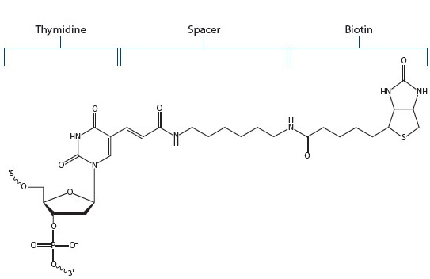

Material
We used DNA and biotin with the following structure in our experiments.
Table 1:DNA seaquence

Figure 1:The structure of Biotin dT from IDT
Figure 2:NUPACK simulation that shows the hybridization of DNA-Long-Control and DNA-Short

Figure 3:NUPACK simulation(circularized DNA for Experiment 3)
Figure 4:The structure of DNA in Figure3

Experiment-1: Mixing dsDNA and avidin at different ratios
In order to Determine the Optimal Avidin Concentration for the Formation of the Curved dsDNA-Avidin Complex,Electrophoresis was performed using a mixture of solutions with varying ratios of avidin- and biotin-modified dsDNA, and the distribution of bands was compared. Detailed experimental methods can be found in the appendix.
Experiment-2: Change the distance between biotin
In order to confirm whether changes in the biotin-to-biotin distance affect the curvature of dsDNA, dsDNA with biotin-to-biotin distances of 1turn, 2turns, and 3turns was reacted with avidin, and electrophoresis was performed.
Detailed experimental methods can be found in the appendix.
Results and Discussion(Experiment₋1,2)
In Figures 5 to 8, we used a 10-bp DNA step ladder. In Figure 9, we used a 50-bp DNA ladder.
タイトルここに画像の説明文が入ります。 Figure 5.PAGE analysis of no biotin, 1turn dsDNA with a little avidin
|
〈Discussion〉
Comparing the lanes without and with avidin in Figures 5 and 6, the 20–40 bp bands are likely dsDNA, ssDNA, or short DNA fragments that do not have avidin attached. For figure 9, there are two hypotheses regarding the bands appearing near the top. One hypothesis is that the band indicated by the arrow indicates figure11 structure. Although avidin is in excess, after 1 turn steric hindrance between avidin molecules prevents the formation of the structure shown in the figure12, resulting instead in the structure. Therefore, in the two-turn and three-turn samples, where the distances between biotins are greater, the structure shown in the figure12 forms, and the corresponding bands disappear. The other hypothesis is that the band indicated by the arrow indicates figure10 structure. In the figure10, there are no biotins that are unbound to avidin, so even with excess avidin, the bands remain in 1 turn. In 2 turn and 3turn, because the bending angle is steep, the structure in figure 10 is difficult to form. It is possible that avidin bound during the transition from the structure in figure 11 to that in figure 10, resulting in the structure shown in figure 12. Therefore, in 2 turn and 3turn, the corresponding bands disappear. We plan to mix DNA with a single biotin modification and avidin to form the structure shown in figure 11, and then compare the resulting band positions.